| Life Expectancy | |
|---|---|
| (Intercept) | 67.57* |
| (1.29) | |
| Tobacco Use (%) | 0.22* |
| (0.06) | |
| Num.Obs. | 161 |
| R2 | 0.084 |
| R2 Adj. | 0.079 |
| RMSE | 7.07 |
| * p < 0.05 | |
Today’s Agenda
Ordinary Least Squares (OLS) Regression
- Extending an OLS regression
Justin Leinaweaver (Spring 2025)
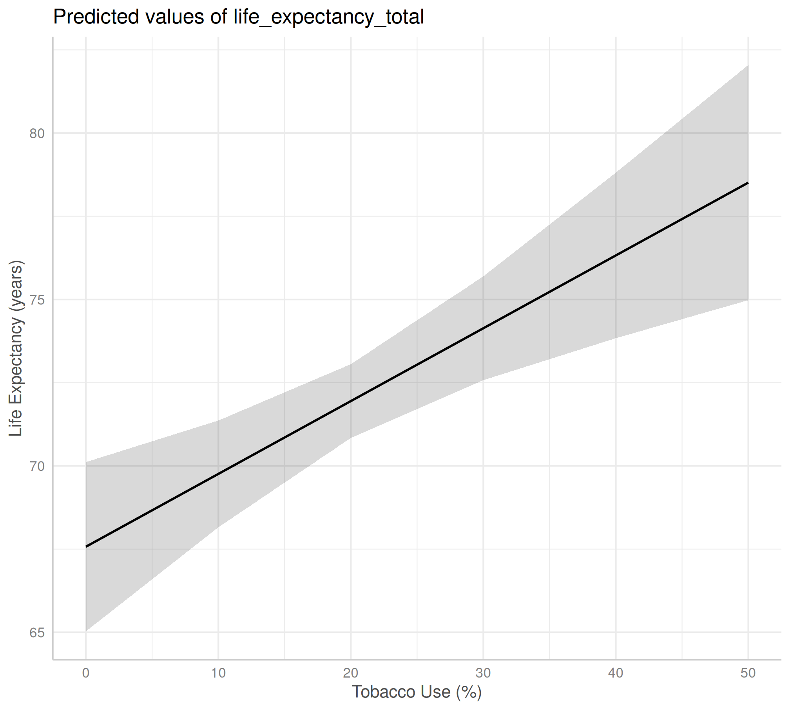
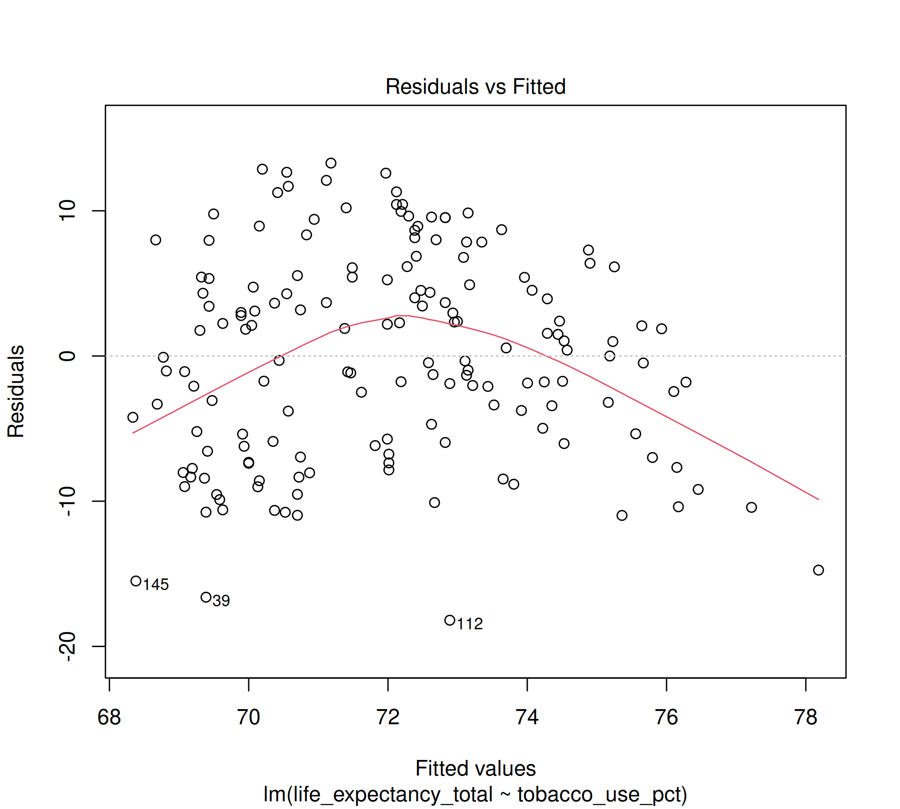
Adapting OLS regressions to fit non-linear relationships
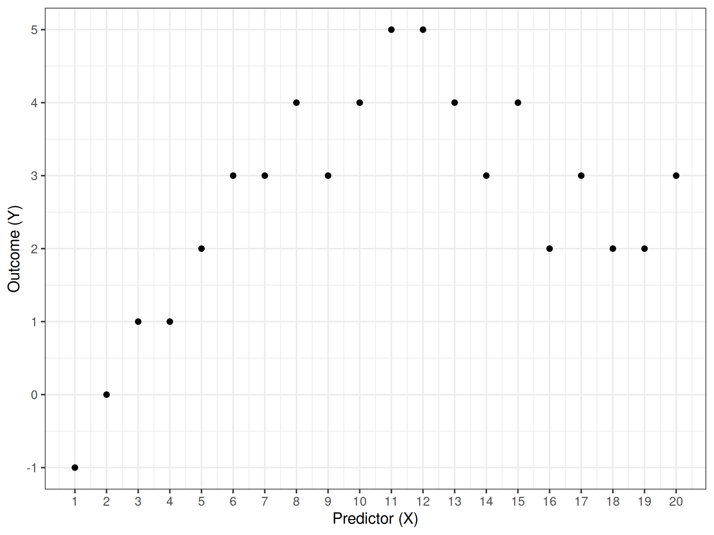
Adapting OLS regressions to fit non-linear relationships
| Outcome (Y) | |
|---|---|
| (Intercept) | 1.332 |
| (0.658) | |
| Predictor (X) | 0.126* |
| (0.055) | |
| Num.Obs. | 20 |
| R2 | 0.225 |
| R2 Adj. | 0.182 |
| RMSE | 1.34 |
| * p < 0.05 | |
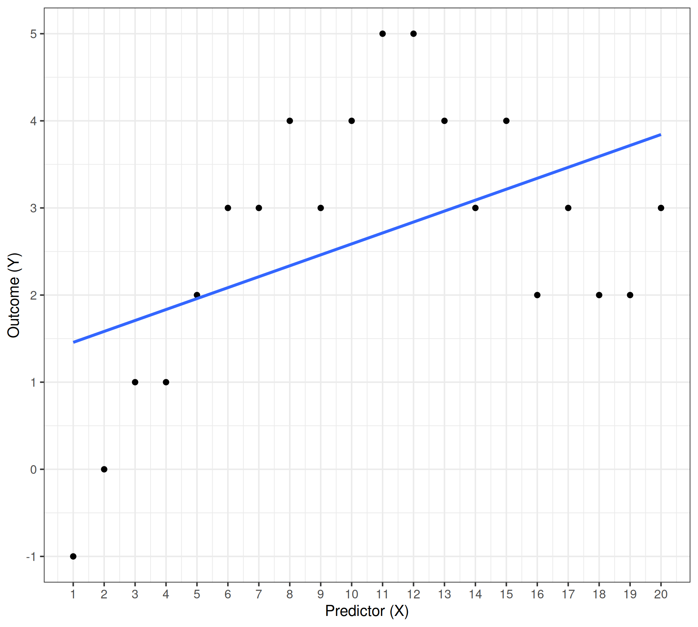
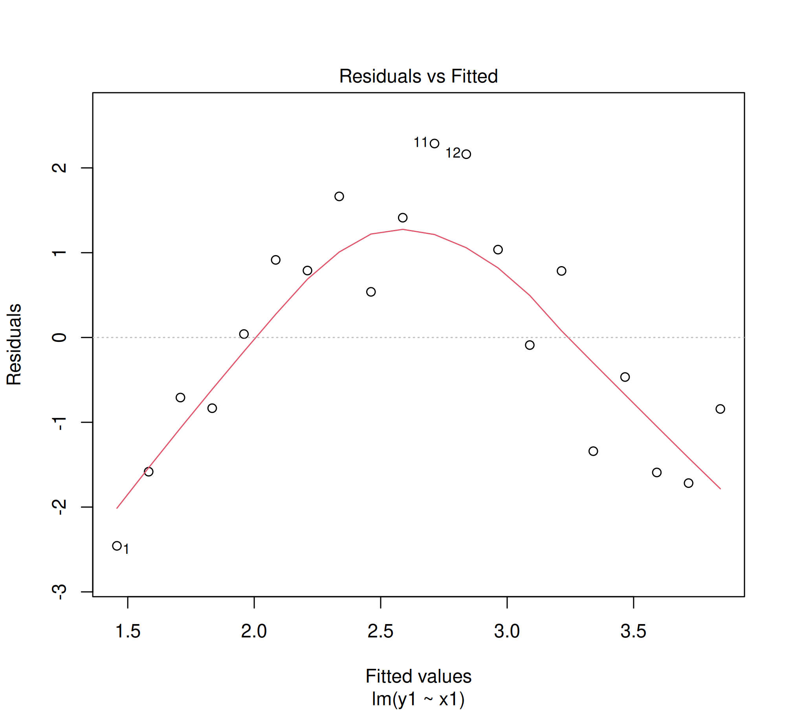
Adapting OLS regressions to fit non-linear relationships
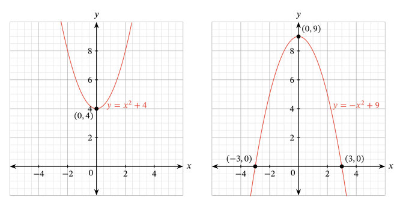
Adapting OLS regressions to fit non-linear relationships
| (1) | (2) | |
|---|---|---|
| (Intercept) | 1.332 | -1.708* |
| (0.658) | (0.533) | |
| Predictor (X) | 0.126* | 0.955* |
| (0.055) | (0.117) | |
| Predictor Squared | -0.039* | |
| (0.005) | ||
| Num.Obs. | 20 | 20 |
| R2 | 0.225 | 0.813 |
| R2 Adj. | 0.182 | 0.791 |
| RMSE | 1.34 | 0.66 |
| * p < 0.05 | ||
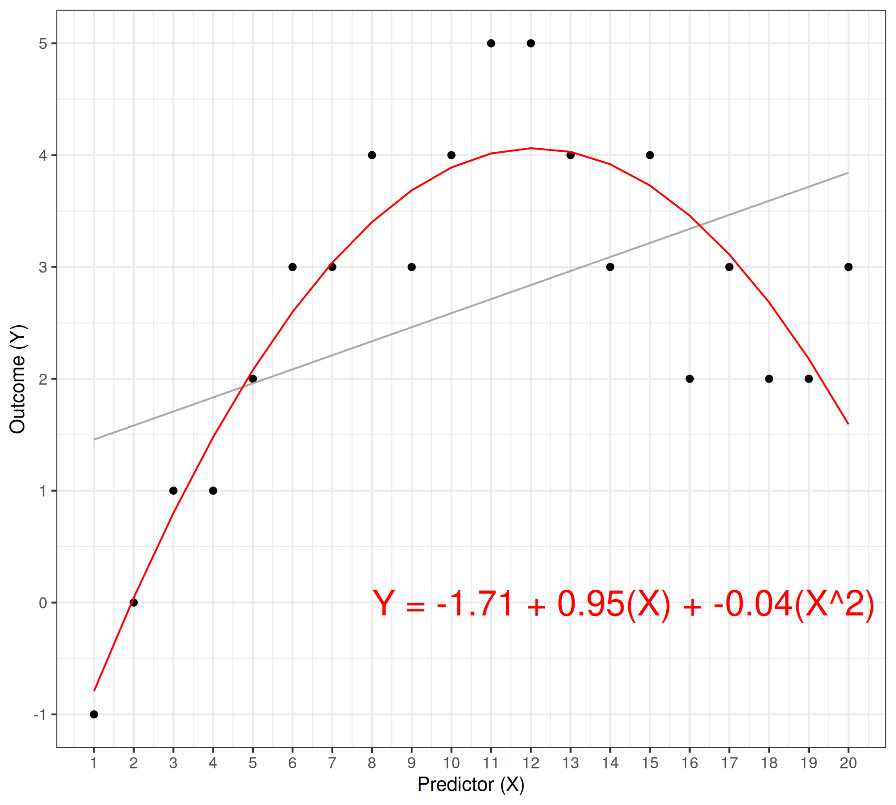
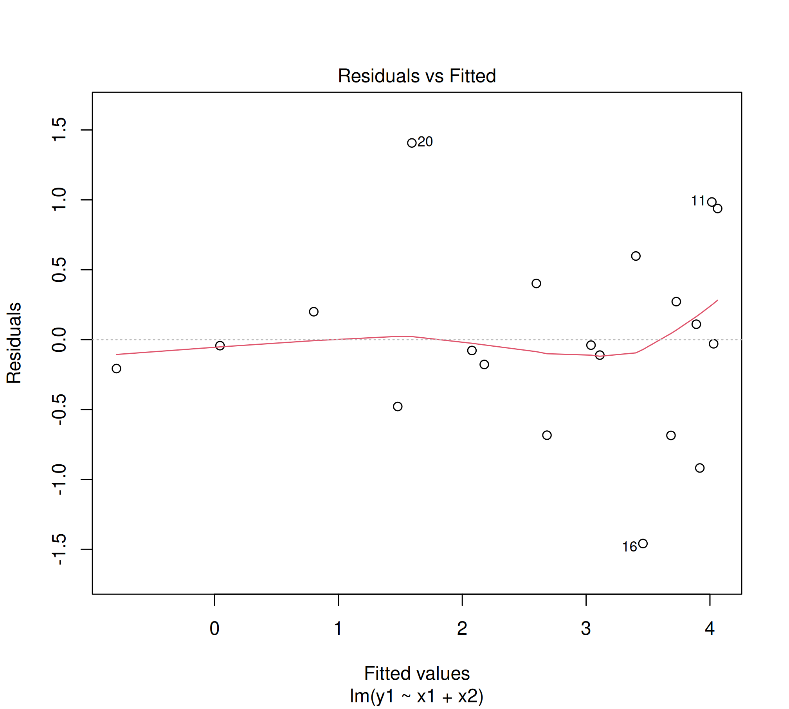
Does tobacco use extend your life expectancy?
| Life Expectancy | |
|---|---|
| (Intercept) | 67.57* |
| (1.29) | |
| Tobacco Use (%) | 0.22* |
| (0.06) | |
| Num.Obs. | 161 |
| R2 | 0.084 |
| R2 Adj. | 0.079 |
| RMSE | 7.07 |
| * p < 0.05 | |

Adapting OLS regressions to fit non-linear relationships
The I() Function
Let’s you modify a variable inside the lm() formula
Combine with “^2” to square the predictor variable
| (1) | (2) | |
|---|---|---|
| (Intercept) | 67.57* | 57.52* |
| (1.29) | (2.23) | |
| Tobacco Use (%) | 0.22* | 1.36* |
| (0.06) | (0.22) | |
| Tobacco Use Squared | -0.03* | |
| (0.00) | ||
| Num.Obs. | 161 | 161 |
| R2 | 0.084 | 0.224 |
| R2 Adj. | 0.079 | 0.214 |
| RMSE | 7.07 | 6.51 |
| * p < 0.05 | ||
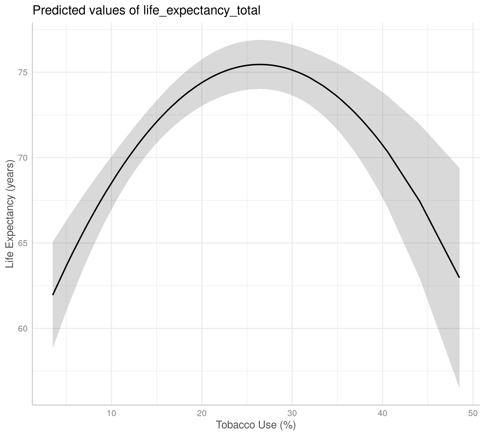
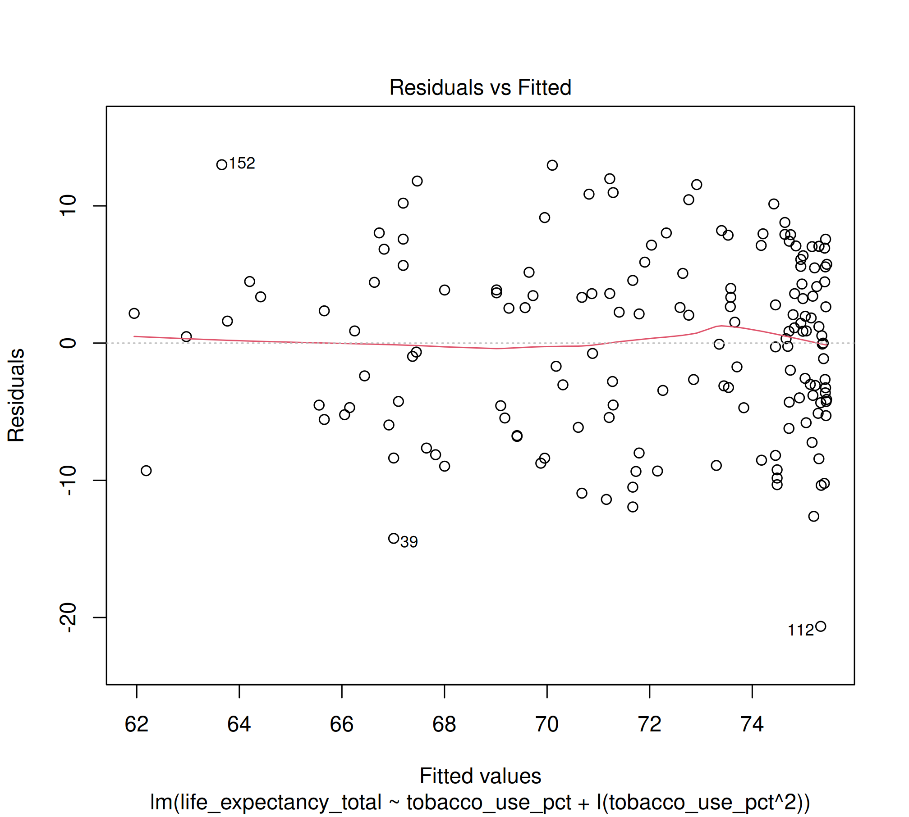
Measuring Sexism at the Movies
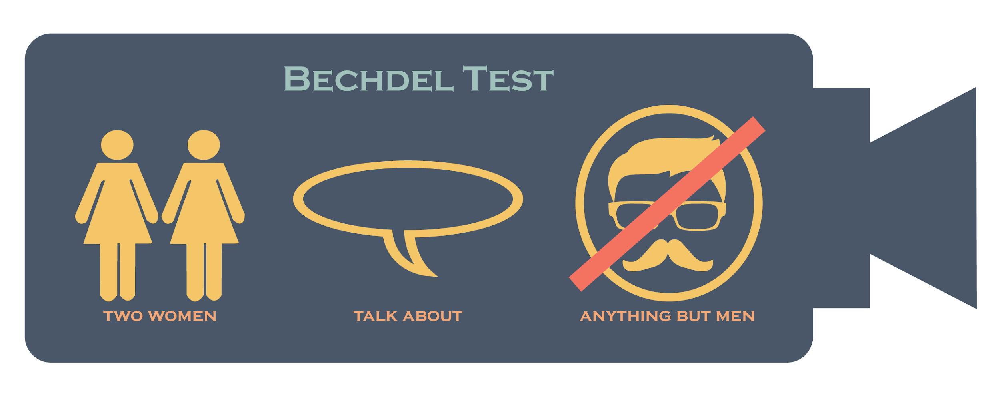
Measuring Sexism at the Movies
What years are included? (
year)What proportion of movies passed the Bechdel Test? (
binary)Which step in the test trips up most movies? (
clean_test)
Do sexist movies make more money?
Regress box office returns (
boxoffice_millions) on the Bechdel Test (binary)Make the table and the predictions
Evaluate the fit of the regression
| Box Office | |
|---|---|
| (Intercept) | 330.95* |
| (12.81) | |
| Passing the Bechdel Test | -83.22* |
| (19.16) | |
| Num.Obs. | 1776 |
| R2 | 0.011 |
| R2 Adj. | 0.010 |
| RMSE | 401.19 |
| * p < 0.05 | |
Box Office = 330.95 - 83.22 (Passing the Bechdel Test)
What kinds of movie sexism make the most money?
Regress box office returns (
boxoffice_millions) on the way some movies fail the Bechdel Test (clean_test)Make the table and the predictions
Evaluate the fit of the regression
| Box Office | |
|---|---|
| (Intercept) | 324.12* |
| (33.79) | |
| clean_testmen | -36.17 |
| (44.45) | |
| clean_testnotalk | 31.54 |
| (38.18) | |
| clean_testnowomen | -17.38 |
| (48.04) | |
| clean_testok | -76.40* |
| (36.67) | |
| Num.Obs. | 1776 |
| R2 | 0.013 |
| R2 Adj. | 0.011 |
| RMSE | 400.66 |
| * p < 0.05 | |
Box Office = 324.1 - 76.4 (Bechdel: Ok) - 17.4 (No Women) + 31.5 (No Talking) - 36.2 (Talk about Men)
Extending the OLS Model
Non-linear relationships
- Use squared predictors (or other polynomials)
Regression on categorical variables
- Group means represented by separate coefficents
For Next Class
Working on our Research Project (2024 Only)
Regress Yale’s EPI on RSF’s Press Freedom Index
Regress one other EPI indicator on RSF’s Press Freedom Index
Submit a polished regression table, residuals plot, predictions plot, and your analysis of the findings.